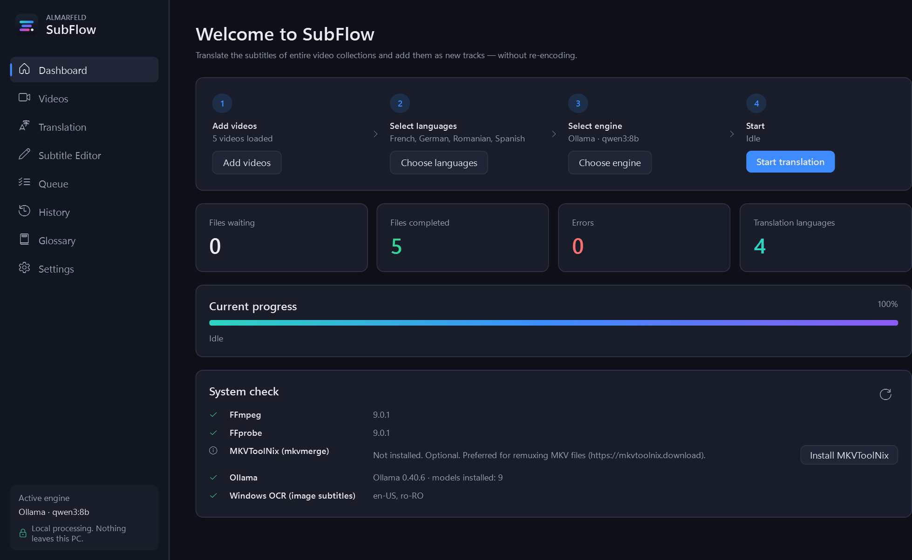
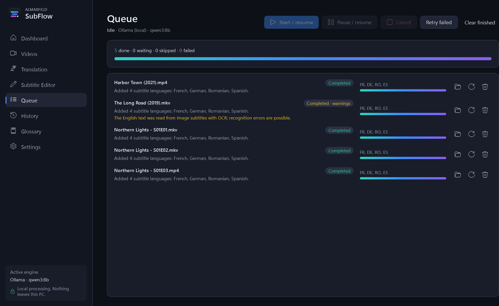
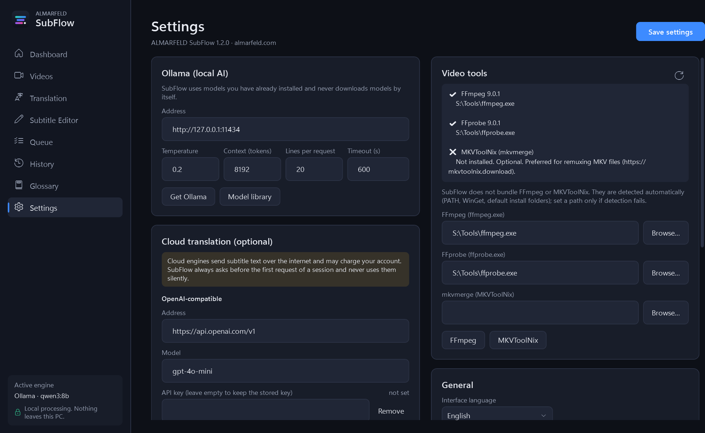

SubFlow translates the subtitles of entire video collections with AI running on your own PC, and adds them as new tracks. No re-encoding, no upload, no account.
One self-contained program · installs without administrator rights

Drop in a movie, a season or hundreds of episodes. SubFlow does the rest and never touches your originals.
Translation runs locally with Ollama. Nothing is uploaded and there is no telemetry. Cloud engines are optional and always ask first.
Video and audio are copied bit for bit into a new MKV. Every output is checked against its source before it is saved.
Lines are translated together with the surrounding dialogue. Every answer is checked for missing lines, the wrong alphabet and untranslated text.
Blu-ray PGS subtitles are read with the OCR built into Windows, then translated. Subtitle files next to your videos work as well.
A glossary for each series keeps names and terms the same in every episode. A cache means a line is never translated twice.
Pause, cancel or close SubFlow; the queue continues where it stopped. Every file is recorded in the history.
Drag files or whole folders onto the window. SubFlow lists every subtitle track it finds.
Choose any of the 42 languages, including right-to-left scripts such as Arabic and Hebrew.
Use a local Ollama model for free, or DeepL, Google or an OpenAI-compatible API if you prefer.
New MKVs with tracks such as "Romanian (AI)" appear in a SubFlow Output folder.


Free and open source. Windows 10 (1809 or later) and Windows 11, 64-bit.
Recommended. Installs for your user only, so no administrator rights are needed. Adds a Start menu entry and an uninstaller.
Download installerNo installation: extract it anywhere and run SubFlow.exe. It also runs from a USB drive.
Install FFmpeg and Ollama separately; SubFlow's Dashboard installs them for you with one click. All versions and checksums are on GitHub Releases.
Yes. SubFlow is open source under the MIT License, and the local AI engine (Ollama) is free too. Only the optional cloud engines (DeepL, Google, OpenAI) can cost money, and they use your own account.
FFmpeg to read and write videos, and Ollama with a model for local translation. The Dashboard checks both and installs them for you after you confirm. For an 8B model such as qwen3:8b, a GPU with at least 8 GB of memory is recommended; it also runs on the CPU, more slowly.
No. SubFlow writes new files to a separate output folder and checks each one against its source. Your originals are only ever read.
They depend on the model. Modern multilingual models give natural, context-aware subtitles for common languages. SubFlow rejects answers with missing or untranslated lines. You can review and correct any line in the built-in subtitle editor.
SRT, ASS/SSA, WebVTT and MP4 text subtitles, subtitle files next to the video, and Blu-ray PGS image subtitles (through Windows OCR). DVD VobSub images are not supported yet.
No. SubFlow works only with files you can already play. It does not circumvent copy protection of any kind.